Analiza rješenja · JOI Spring Camp 2019 · Dan 2
Dvije antene
O ovom članku
Tekst je prijevod službene japanske prezentacije rješenja, preoblikovan u članak. Slajdovi su ugrađeni kao slike; natpis pod svakim slajdom je prijevod teksta na njemu. Dijelovi označeni kao trenerska napomena nisu u izvornoj prezentaciji — dodani su da popune korake koje slajdovi preskaču ili samo skiciraju.
Slajdovi
Zadatak i podzadaci 1–2
izvorni slajdovi 1–4
-
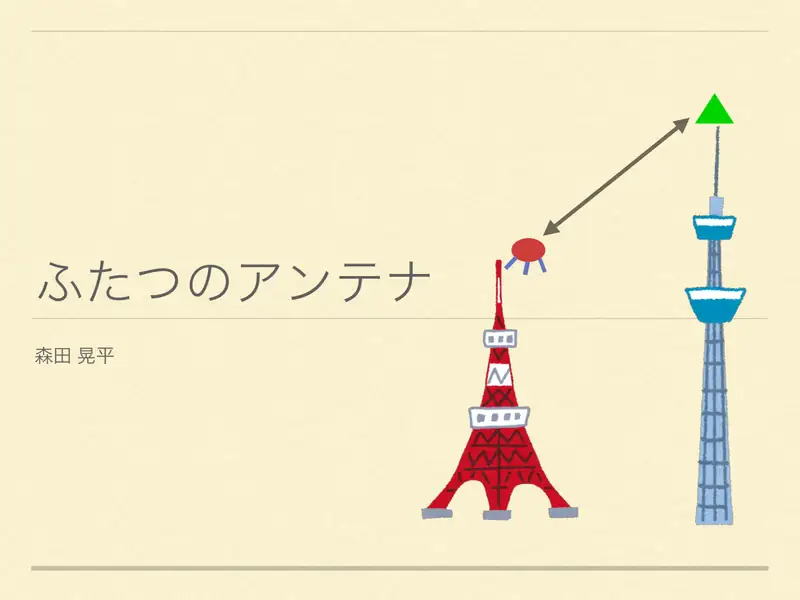
1Naslov; Morita Kohei. -
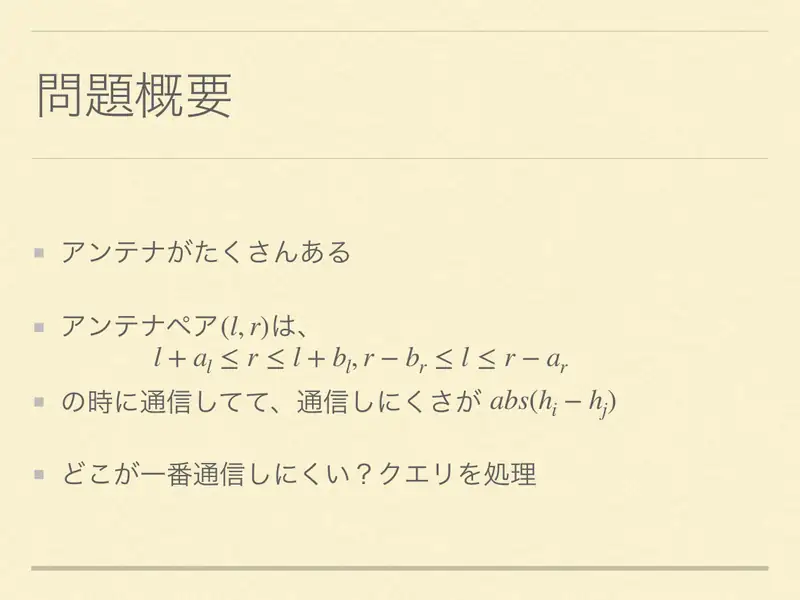
2Par $(l,r)$ komunicira ako $l+A_l\le r\le l+B_l$ i $r-B_r\le l\le r-A_r$; cijena $|h_l-h_r|$; upiti nad intervalima. -
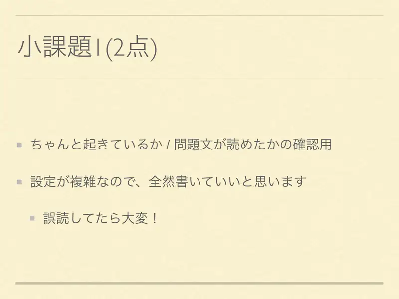
3Podzadatak 1: provjera razumijevanja — postavka je složena, napiši naivno. -
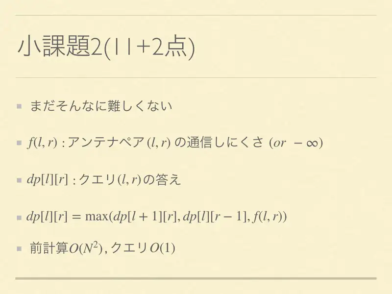
4Podzadatak 2: $dp[l][r]=\max(dp[l+1][r],dp[l][r-1],f(l,r))$, $O(N^2)$, upit $O(1)$.
← → tipke ili klik na sliku
Koraci algoritma
Predobrada
izvorni slajdovi 5–6
-
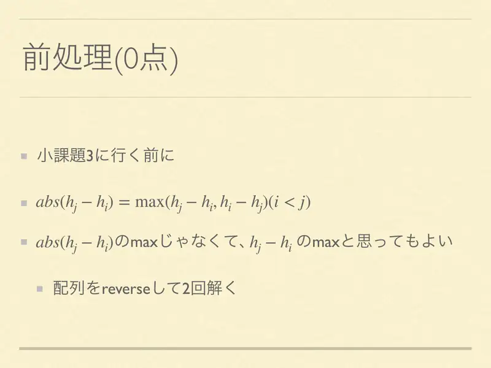
5$|h_j-h_i|=\max(h_j-h_i,h_i-h_j)$: dovoljno maksimizirati $h_j-h_i$ i riješiti dvaput (obrnuti niz). -
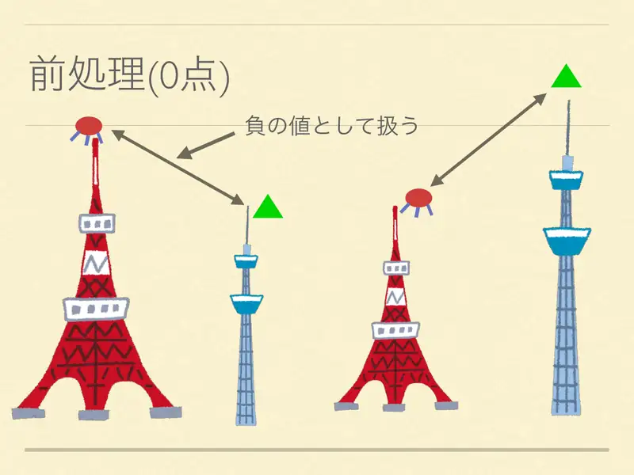
6Ili tretiraj kao negativne vrijednosti.
← → tipke ili klik na sliku
Podzadatak 3 22 boda
Koraci algoritma
Pomicanje r + RMQ
izvorni slajdovi 7–11
-
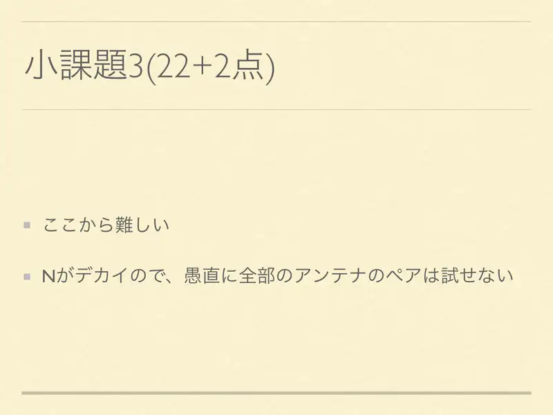
7Od ovdje teže: $N$ velik, ne mogu se probati svi parovi. -
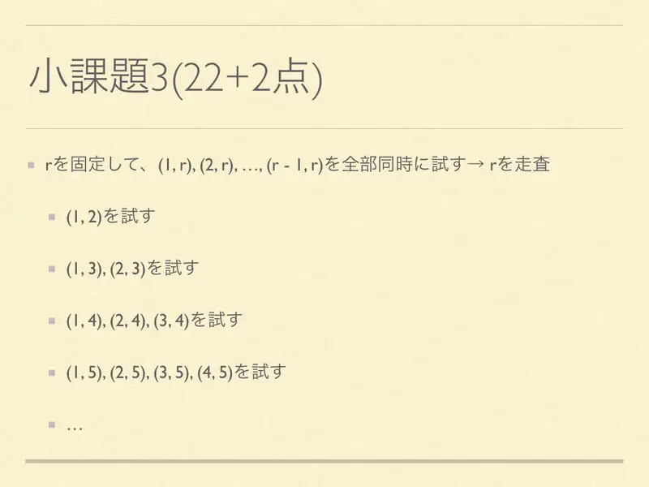
8Fiksiraj $r$, probaj sve $(l,r)$ odjednom; pomiči $r$. -
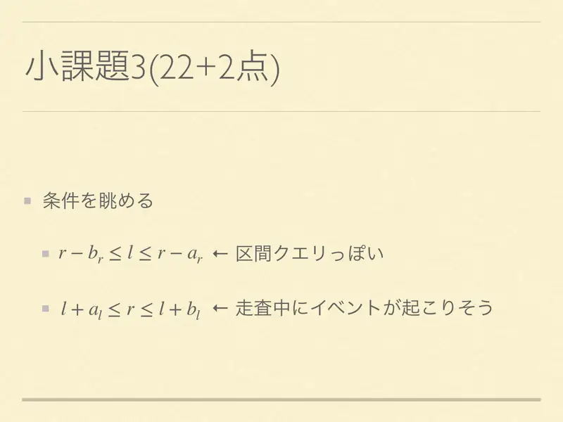
9Uvjeti: $r-B_r\le l\le r-A_r$ — intervalni upit; $l+A_l\le r\le l+B_l$ — događaji tijekom prolaza. -
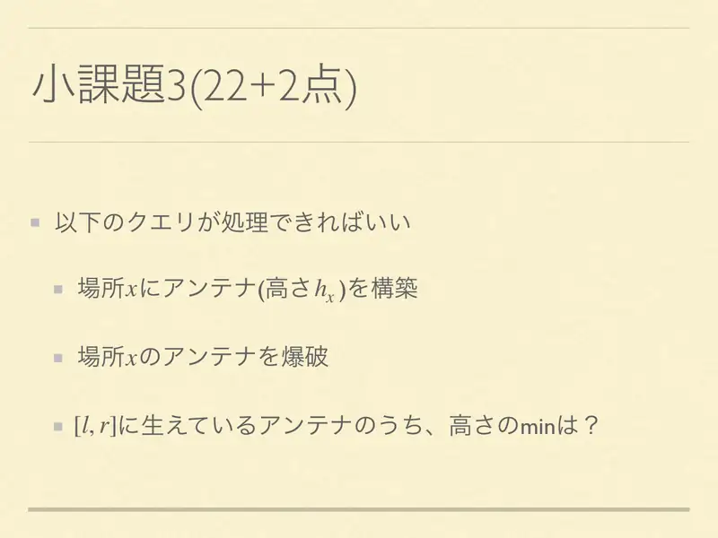
10Treba: izgradi antenu visine $h_x$ na mjestu $x$; sruši antenu; min visine na $[l,r]$. -
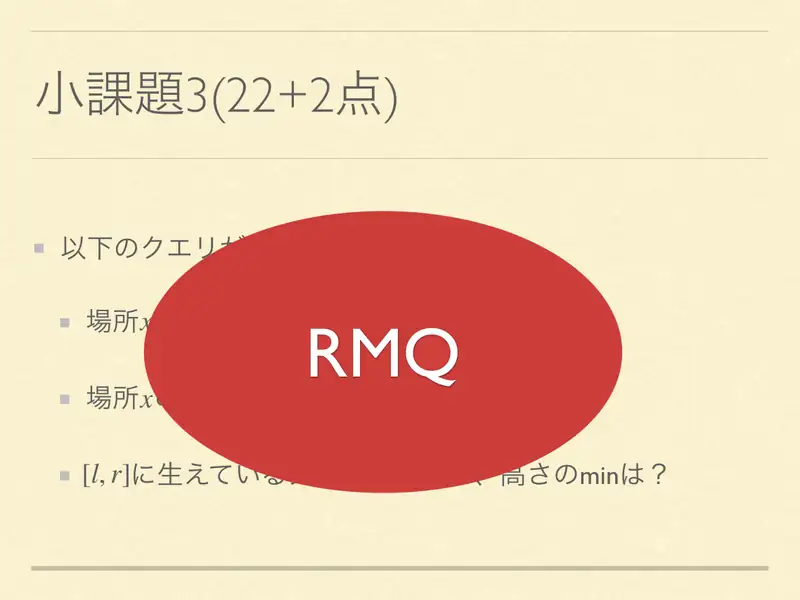
11RMQ (segmentno stablo). Odgovor $=\max_r(h_r-\min)$.
← → tipke ili klik na sliku
Puno rješenje 65 bodova
Koraci algoritma
Lijeno stablo s min a, max d
izvorni slajdovi 12–17
-
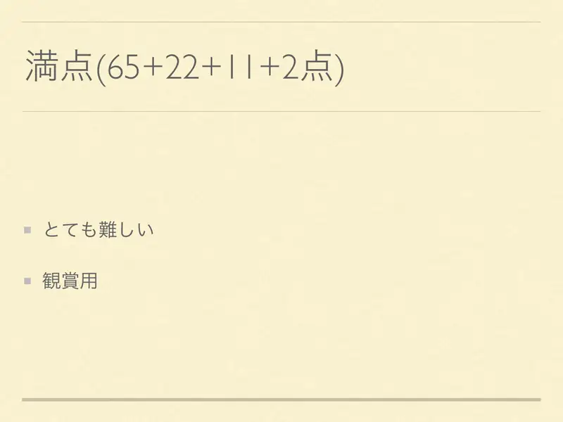
12Vrlo teško („za promatranje”). -
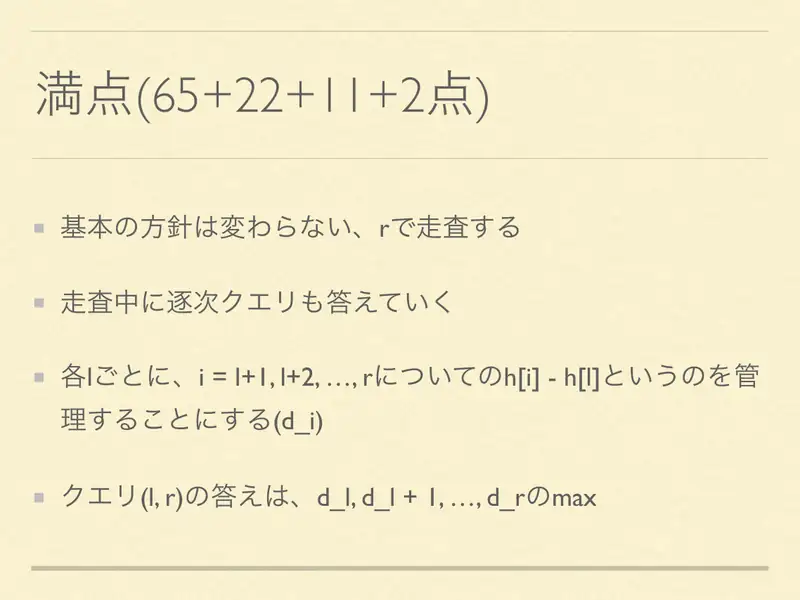
13Ista shema: pomiči $r$, odgovaraj upite usput. Za svaki $l$ održavaj $d_l=\max(h_i-h_l)$ po obrađenim $i$; upit $(l,r)$ = $\max d_l..d_r$. -
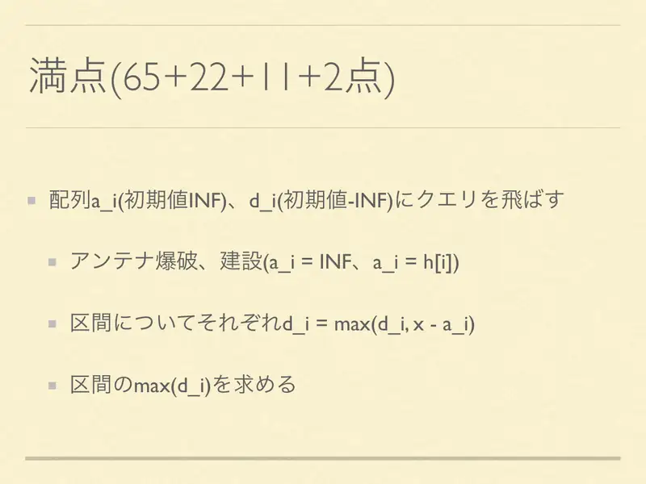
14Nizovi $a_i$ (INF) i $d_i$ ($-\infty$): ruši/gradi ($a_i=\infty$ / $a_i=h_i$); intervalno $d_i=\max(d_i,x-a_i)$; intervalni $\max d_i$. -
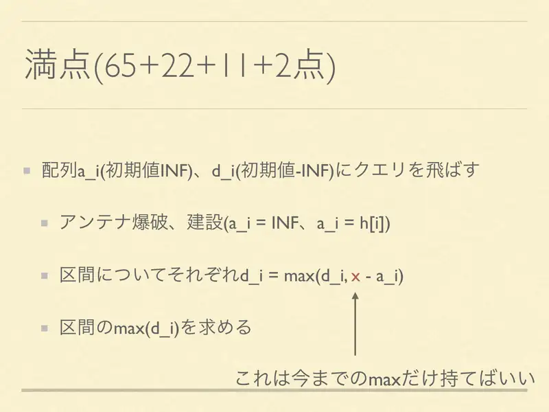
15Dovoljno je pamtiti dosadašnji $\max x$. -
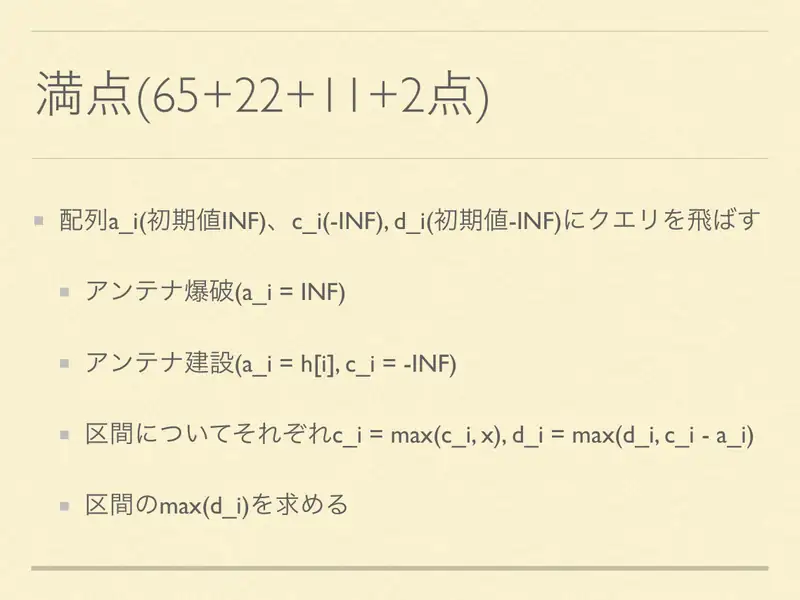
16Dodaj $c_i$ ($-\infty$): gradnja postavlja $c_i=-\infty$; intervalno $c_i=\max(c_i,x)$, $d_i=\max(d_i,c_i-a_i)$. -
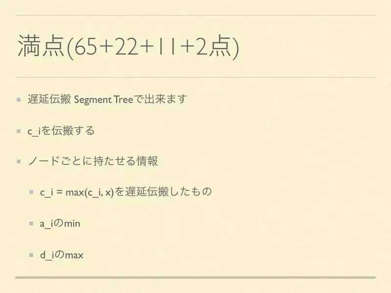
17Lijeno propagirajuće segmentno stablo: propagiraj $c$; čvor čuva lijeni $c$, $\min a$, $\max d$.
← → tipke ili klik na sliku
Slajd
Statistika
izvorni slajd 18
-
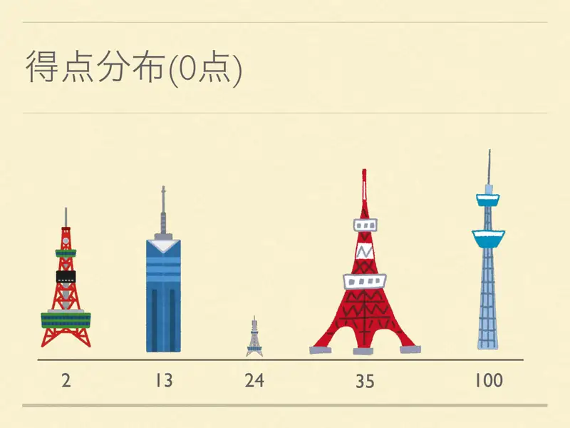
18Raspodjela bodova prikazana tornjevima: 2, 13, 24, 35, 100 (najviše na 35 i 100).
Sažetak
- Pomiči $r$; aktivnost $l$ je vremenski interval; partner-uvjet je interval nad $l$.
- Segmentno stablo: $\min a$ (aktivni), $\max d$, lijeni $\max x$; $d\leftarrow\max(d,x-\min a)$.
- Dva prolaza za predznak; $O((N+Q)\log N)$.